One shared, typed, long-term memory for Claude Code, Cursor, and your own scripts. No API keys. No cloud. No Docker. MIT licensed.

A real CLI session — generated by make demo, no staging. 32 seconds, six scenes.
Flat embedding search has three failure modes every agent hits: scope leaks, stale facts that never die, and retrieval with no sense of what's actually relevant. memstrand is built around fixing all three.
Every atom carries a category, provenance, and confidence under a validated schema — not an opaque blob of text. Agents can reason about what kind of memory they're reading.
Dense vectors plus BM25 keyword search, optional reranking, and absolute relevance scoring — a lone weak match scores low instead of 1.0 just for showing up.
FSRS spaced-repetition dynamics, TTL expiry, near-duplicate linking, and edits that supersede instead of silently deleting. Nothing is ever destroyed without a trace.
memstrand serve exposes MCP, REST, a web UI, and an OpenAI-compatible proxy on 127.0.0.1:7777 — Claude Code, Cursor, and scripts all share one store, safely.
Task- and host-scoped atoms with a hard visibility rule: a scoped query sees its scope plus globals — never another task's secrets. The scope-leak bug class, fixed at the root.
Pull in Markdown, Obsidian vaults (wikilinks become graph edges), and PDFs, with change detection and --watch. Your existing notes become queryable memory.
Install, start the daemon, and teach your agent its first fact.
# install pip install memstrand # start the daemon (MCP + REST + web UI + OpenAI proxy) memstrand serve # teach it something memstrand remember "Sam prefers concise answers, code first" --category preference # ask it later — from any agent, any session memstrand recall "how does Sam like answers?"
from memstrand import Memory mem = Memory() # local-first: embedded Qdrant + SQLite, zero Docker mem.remember("deploy freezes on Fridays", category=Category.fact, task_id="deploy-bot") # scoped: only this task sees it for hit in mem.recall("when do deploys freeze?", task_id="deploy-bot"): print(hit["score"], hit["content"])
# distill every session on exit, inject context on every prompt memstrand hook print-config # paste the snippet into ~/.claude/settings.json
It's not the only way to give an agent memory. Here's where the alternatives fall short for this job.
Stores embeddings, not memories. No types, no provenance, no lifecycle — stale facts live forever and a lone weak match looks perfect.
Built for humans writing, not agents retrieving. No API-first recall, no typed schema, no scope isolation between your agents' tasks.
Your agent's memories on someone else's server, behind an API key and a price meter. memstrand runs on your machine, on your data, for free.
One folder (~/.memstrand), one writer (the daemon), zero required infrastructure.